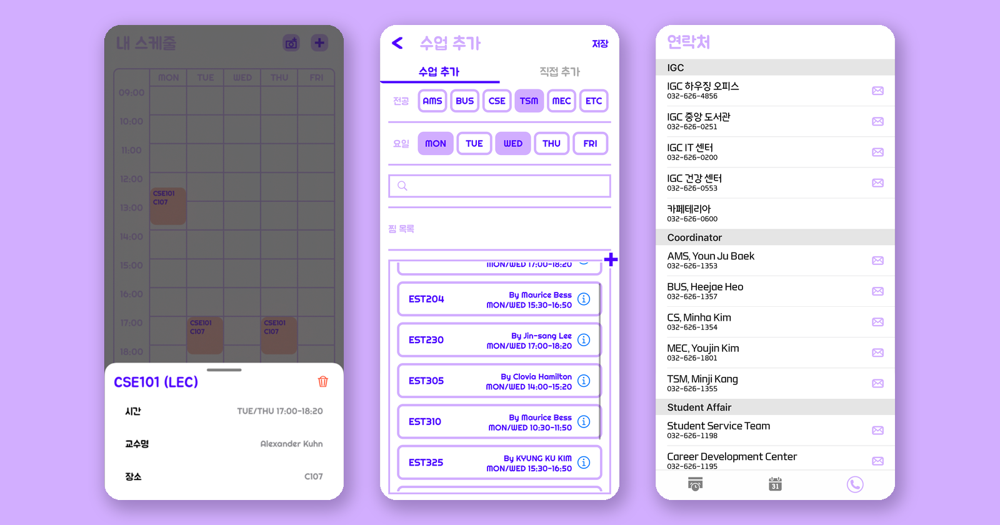
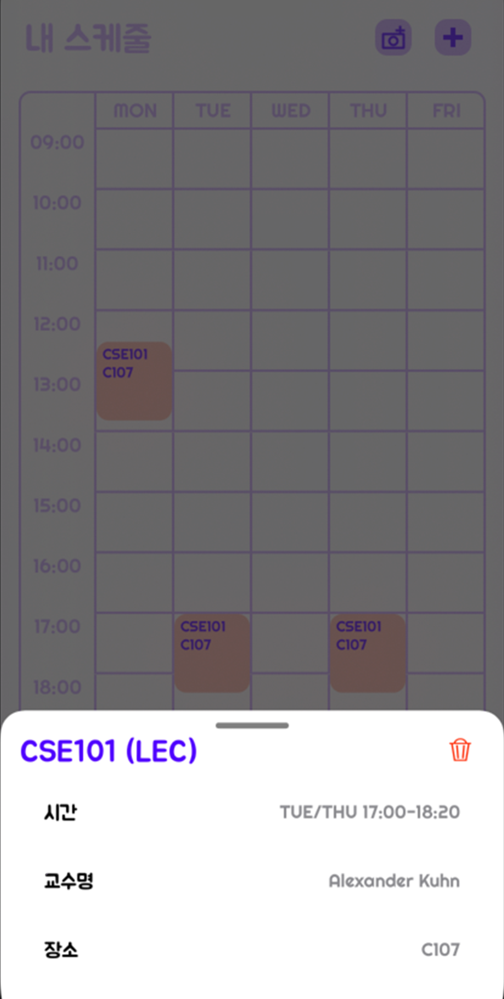
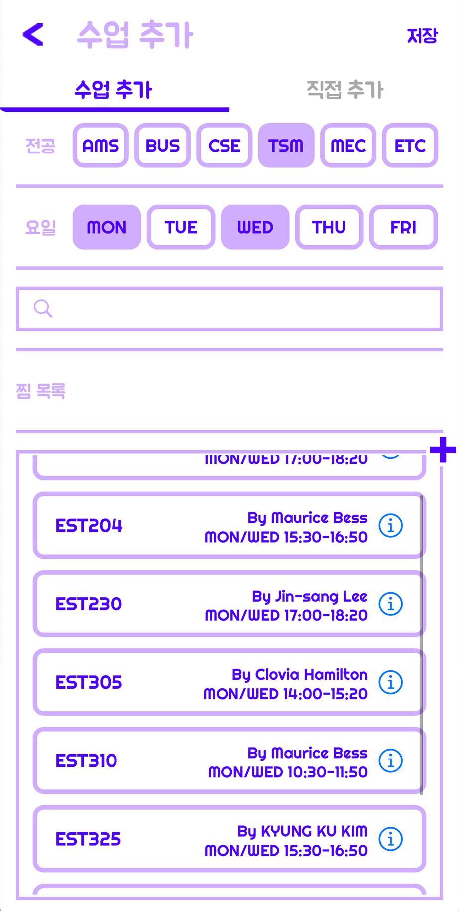
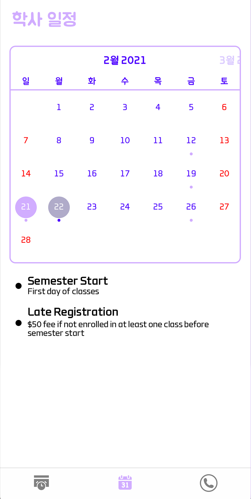
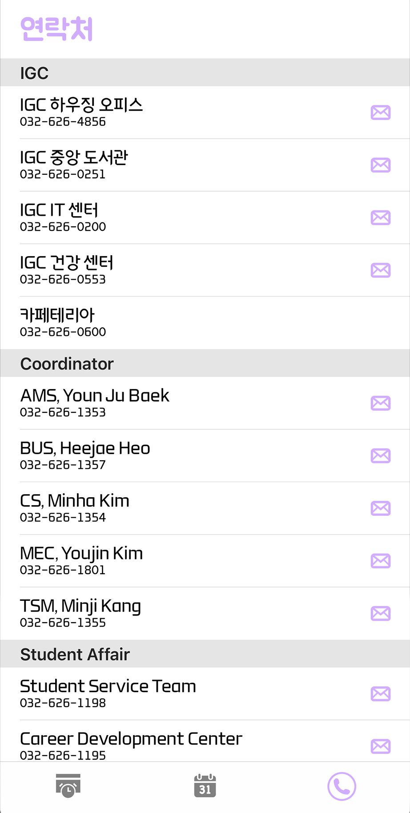

Suni (순이) — Educational Time Manager for SUNY Korea Students
Hojung Lim · Android client (Kotlin) · Two-platform student team project
Overview

Suni's three main areas — the weekly timetable, the course catalogue, and the campus directory
The problem it solves is mundane but real. Course times, the academic calendar, and office phone numbers all live in different places on the university's site, and none of them are pleasant to use on a phone. Suni pulls them into one app where building a timetable takes a few taps, the semester's key dates are a swipe away, and calling the housing office is a single tap rather than a search.
The App

Weekly timetable, with a tapped course opening its detail sheet

Course catalogue filtered by major and meeting day

Academic calendar — month view plus the event list

Campus directory grouped by office, with call and email
Preview screens as published in the repository README, cropped to the app UI
What It Does
Weekly timetable
The schedule tab renders a Monday–Friday grid of course blocks. Tapping a block opens a
detail sheet with the meeting pattern, instructor and room, and a delete control; removing
a course writes the timetable straight back to storage. The whole timetable is serialised
to SharedPreferences under a single "timetable" key, so a
student's schedule survives restarts without any account or server.
A toolbar action captures the timetable as an image — the view is drawn
into a Bitmap through a Canvas, compressed to JPEG and inserted
into the device gallery via MediaStore. It exists because the thing students
actually do with a finished timetable is send a picture of it to their friends.
Building a schedule
Adding classes opens a two-tab screen: pick from the course catalogue, or enter a class by hand for anything the catalogue does not cover. The catalogue is filterable by major (AMS, BUS, CSE, MEC, TSM and ETC) and by meeting day (Monday through Friday), with a search field on top. Each row shows the course code, instructor and meeting pattern, plus an info button linking out to the official course page.
One detail that drives the data model: a single course can occupy more than one slot on the grid. A lecture that meets twice a week plus a lab is three separate blocks, so adding one catalogue entry can hand back up to three schedule objects at once — 28 of the 161 courses carry a lab section.
Academic calendar and campus directory
The calendar tab pairs a month view with a scrollable list of semester events — registration
deadlines, breaks and holidays — drawn from 47 bundled entries, 14 of which are marked as
holidays. The contacts tab lists 28 campus numbers grouped by office (IGC facilities,
department coordinators, and student affairs); tapping a row fires an
ACTION_DIAL intent with the number pre-filled, and each row also carries an
email shortcut.
How It Is Built
The app is a single-activity architecture. MainActivity hosts a
navigation graph with three top-level destinations wired to a
BottomNavigationView, so the three tabs are fragments rather than activities and
back-stack behaviour comes from Jetpack Navigation rather than hand-rolled logic. Adding a
course is the one flow that leaves the graph, launching a separate activity for result.
| Layer | Choice | Why |
|---|---|---|
| Language | Kotlin, min SDK 19 / target SDK 30 | Low minimum so older student handsets are still supported |
| Navigation | Jetpack Navigation + BottomNavigationView |
Three tabs as top-level destinations with a single host activity |
| Timetable grid | TimetableView, checked in as its own Gradle module | Supplies the grid, the course blocks and a serialise/restore format for the whole table |
| Lists | RecyclerView with a custom adapter per screen |
Courses, calendar events and contacts are all list-shaped |
| Add-course flow | ViewPager + TabLayout |
Catalogue and manual entry as two tabs returning the same result type |
| Persistence | SharedPreferences (serialised timetable string) |
The only mutable state is one student's own schedule — no database needed |
| Content data | Three JSON files in assets/ |
Ships with the APK, so the app works fully offline |
Bundled data
| Asset | Entries | Feeds |
|---|---|---|
all_courses.json | 161 courses across 6 majors, 4 section types | Course catalogue |
calendar.json | 47 events, 14 flagged as holidays | Academic calendar |
phone_number.json | 28 contacts with name, number and email | Campus directory |
Each catalogue entry carries major, name, title,
type (LEC, LAB, REC or SEM), credit, days,
startTime, endTime, room, instructor,
a hasLab flag and a link to the official course description.
Shipping the catalogue inside the APK was the right call for a first release — the app is
fully usable offline and there is no backend to keep running — but it is also the design's
main limitation, since a new semester means a new build. Firebase is already wired into the
project (Auth, Realtime Database, Firestore and Analytics are all declared, alongside a
google-services.json) as the groundwork for moving that content server-side;
in the shipped version the three screens still read from the bundled assets.
Planned Work
The feature named in the README as next up is an AI chatbot, also called 순이, trained on the questions students ask most often — so the app can answer routine "when is the add/drop deadline" and "who do I contact about housing" questions directly instead of making the student find the right calendar entry or phone number themselves.
The natural companion to that is moving the course catalogue and academic calendar off the bundled JSON files and onto the Firebase backend that the project is already configured for, so a new semester becomes a data update rather than an app release.
Team
| Role | Person |
|---|---|
| Android development | Hojung Lim |
| iOS development | Hasung Jun |
| Design | Ahyoung Oh |
Both clients were built against a single shared design, which is why the two platforms look identical screen for screen. My side was the Android app end to end — navigation, the timetable and its persistence, the course catalogue and filtering, the calendar and directory screens, and the release builds.